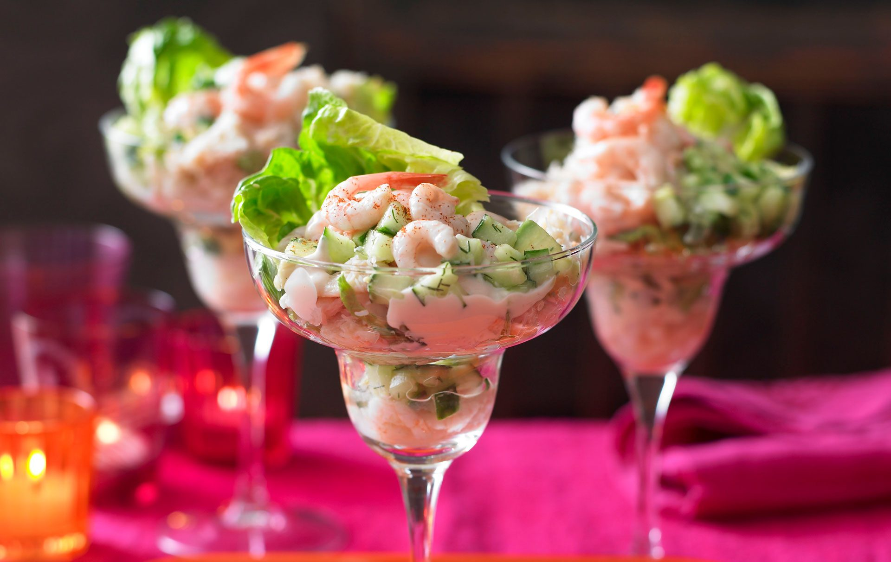

Seafood cocktail recipe

Our seafood cocktail recipe is a fantastic twist on the much loved classic. We’ve added white crabmeat to the recipe alongside the prawns for an extra taste of the sea which your guests are sure to love. The recipe has been triple tested so you can be confident that things will go to plan, just read through the steps carefully. It’s not embarrassing to serve these retro prawn cocktails anymore – it’s trendy. The recipe originally featured in Essentials magazine and is sure to be a hit with whoever is lucky enough to be tucking into your hard work. One of the best things about serving this seafood cocktail up as a starter is that it can be prepped in advance so there is no stress on the actual day!
Ingredients
-
175g good-quality mayonnaise
- 1-2tsp Worcestershire sauce
- 500g North Atlantic cooked prawns
- 1 large ripe avocado, finely chopped
- 1⁄4 large cucumber, chopped
- 6 dill sprigs, leaves removed and chopped
- Zest and juice of 1⁄2 lemon
- 3 small heads of gem lettuce, leaves removed
- 100g fresh or tinned white crabmeat (drained if tinned)
- 6 large tail-on cooked prawns
Method
- Mix the mayonnaise with the tomato ketchup, Tabasco and Worcestershire sauce. Stir prawns through; set aside.
- Mix the avocado, cucumber, dill, lemon juice and zest together and season.
- Remove the dark green outer leaves of the little gems and shred the rest. Put 3 whole leaves into each glass and top with shredded lettuce. Add the prawns, then 2⁄3 of the avocado mix, the craband finally the remaining avocado mix.
- Garnish each glass with a large prawn and serve with lemon wedges
Top tip for making Seafood cocktail
For a tasty alternative to the Marie Rose sauce, add a little wasabi and a squeeze of lemon to your mayo - it has a great kick and goes so well with the prawns.